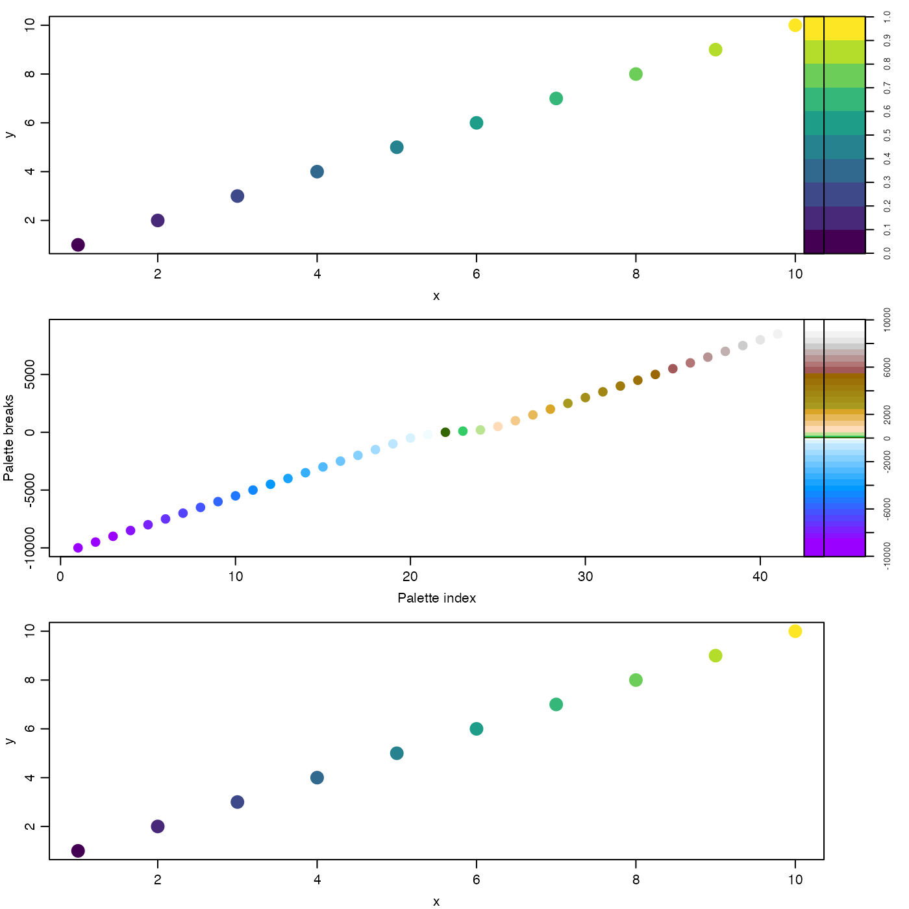
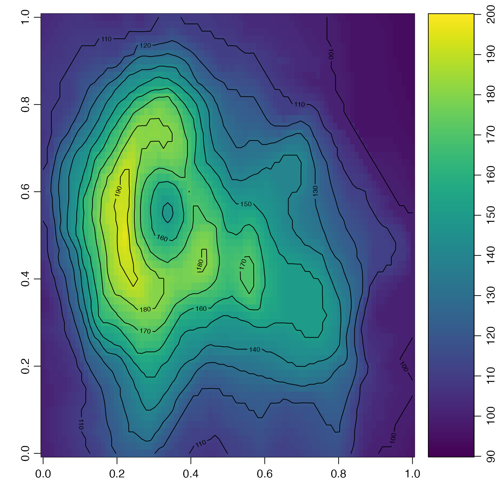

In the normal use, drawPalette() draws an image palette near the
right-hand side of the plotting device, and then adjusts the global margin
settings in such a way as to cause the next plot to appear (with much larger
width) to the left of the palette. The function can also be used, if
zlim is not provided, to adjust the margin without drawing anything;
this is useful in lining up the x axes of a stack of plots, some some of
which will have palettes and others not.
drawPalette( zlim, zlab = "", breaks, col, colormap, mai, cex = par("cex"), pos = 4, las = 0, labels = NULL, at = NULL, levels, drawContours = FALSE, plot = TRUE, fullpage = FALSE, drawTriangles = FALSE, axisPalette, tformat, debug = getOption("oceDebug"), ... )
| zlim | two-element vector containing the lower and upper limits of z. This may also be a vector of any length exceeding 1, in which case its range is used. |
|---|---|
| zlab | label for the palette scale. |
| breaks | the z values for breaks in the color scheme. |
| col | either a vector of colors corresponding to the breaks, of length
1 less than the number of breaks, or a function specifying colors, e.g.
|
| colormap | a color map as created by |
| mai | margins for palette, as defined in the usual way; see
|
| cex | numeric character expansion value for text labels |
| pos | an integer indicating the location of the palette within the plotting area, 1 for near the bottom, 2 for near the left-hand side, 3 for near the top side, and 4 (the default) for near the right-hand side. |
| las | optional argument, passed to |
| labels | optional vector of labels for ticks on palette axis (must
correspond with |
| at | optional vector of positions for the |
| levels | optional contour levels, in preference to |
| drawContours | logical value indicating whether to draw contours on the palette, at the color breaks. |
| plot | logical value indicating whether to plot the palette, the default, or whether to just alter the margins to make space for where the palette would have gone. The latter case may be useful in lining up plots, as in example 1 of “Examples”. |
| fullpage | logical value indicating whether to draw the palette filling
the whole plot width (apart from |
| drawTriangles | logical value indicating whether to draw triangles on the top and bottom of the palette. If a single value is provide, it applies to both ends of the palette. If a pair is provided, the first refers to the lower range of the palette, and the second to the upper range. |
| axisPalette | optional replacement function for |
| tformat | optional format for axis labels, if the variable is a time type (ignored otherwise). |
| debug | a flag that turns on debugging. Set to 1 to get a moderate amount of debugging information, or to 2 to get more. |
| ... | optional arguments passed to plotting functions. |
None.
The plot positioning is done entirely with margins, not with
par(mfrow) or other R schemes for multi-panel plots. This means that
the user is free to use those schemes without worrying about nesting or
conflicts.
An important consequence of the margin
adjustment is that multi-panel plots require that the initial margin be
stored prior to the first call to drawPalette(), and reset after each
palette-plot pair. This method is illustrated in “Examples”.
This is used by imagep().
library(oce) par(mgp=getOption("oceMgp")) ## 1. A three-panel plot par(mfrow=c(3, 1), mar=c(3, 3, 1, 1)) omar <- par('mar') # save initial margin ## 1a. top panel: simple case drawPalette(zlim=c(0, 1), col=oce.colorsJet(10)) plot(1:10, 1:10, col=oce.colorsJet(10)[1:10],pch=20,cex=3,xlab='x', ylab='y') par(mar=omar) # reset margin ## 1b. middle panel: colormap cm <- colormap(name="gmt_globe") drawPalette(colormap=cm) icol <- seq_along(cm$col) plot(icol, cm$breaks[icol], pch=20, cex=2, col=cm$col, xlab="Palette index", ylab="Palette breaks") par(mar=omar) # reset margin ## 1c. bottom panel: space for palette (to line up graphs) drawPalette(plot=FALSE) plot(1:10, 1:10, col=oce.colorsJet(10)[1:10],pch=20,cex=3,xlab='x', ylab='y')par(mar=omar) # reset margin # 2. Use layout to mimic the action of imagep(), with the width # of the palette region being 14 percent of figure width. d <- 0.14 layout(matrix(1:2,nrow=1), widths=c(1-d,d)) image(volcano, col=oce.colorsJet(100), zlim=c(90, 200)) contour(volcano, add=TRUE) drawPalette(c(90, 200), fullpage=TRUE, col=oce.colorsJet)